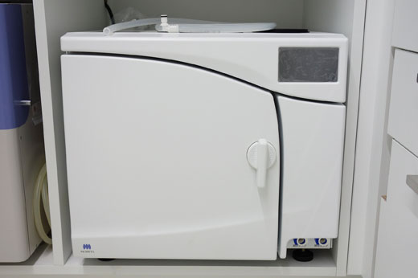
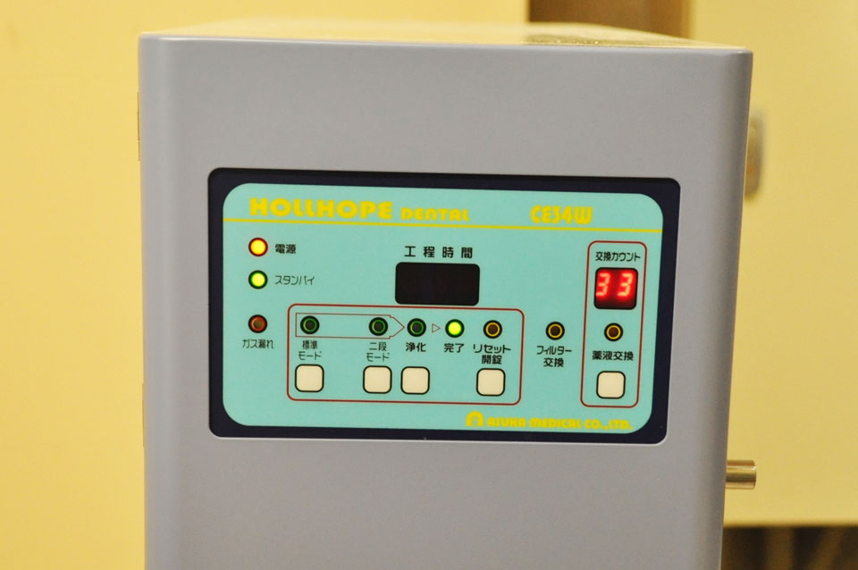
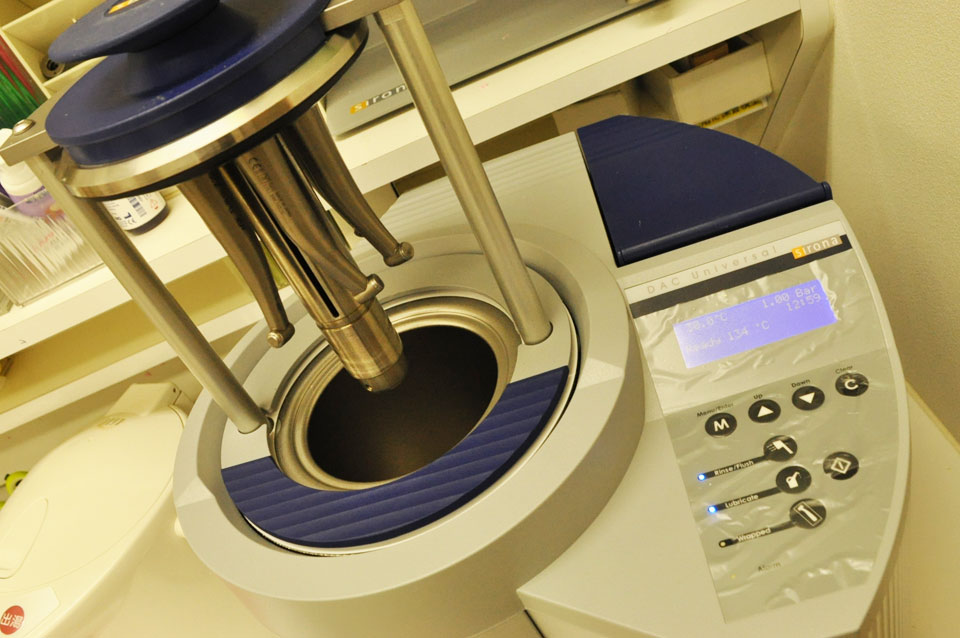
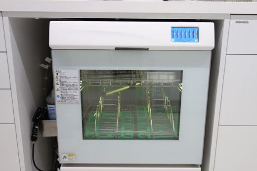
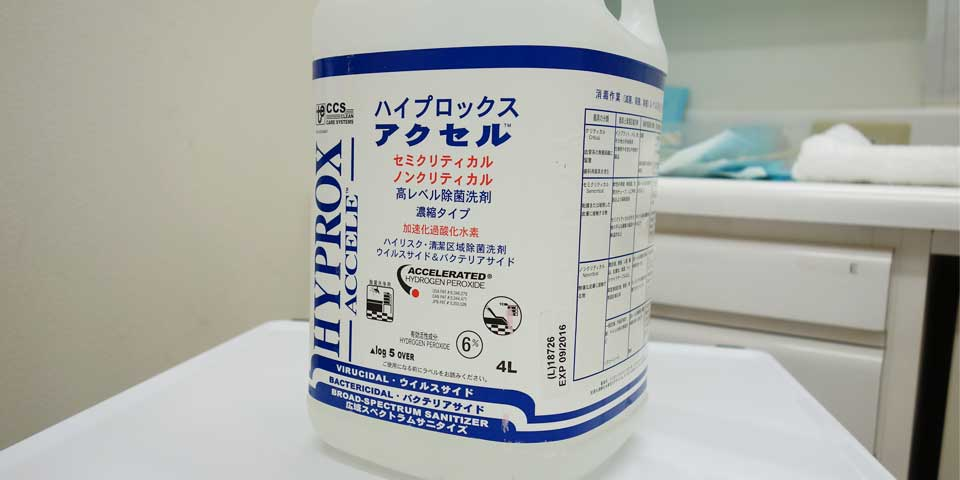
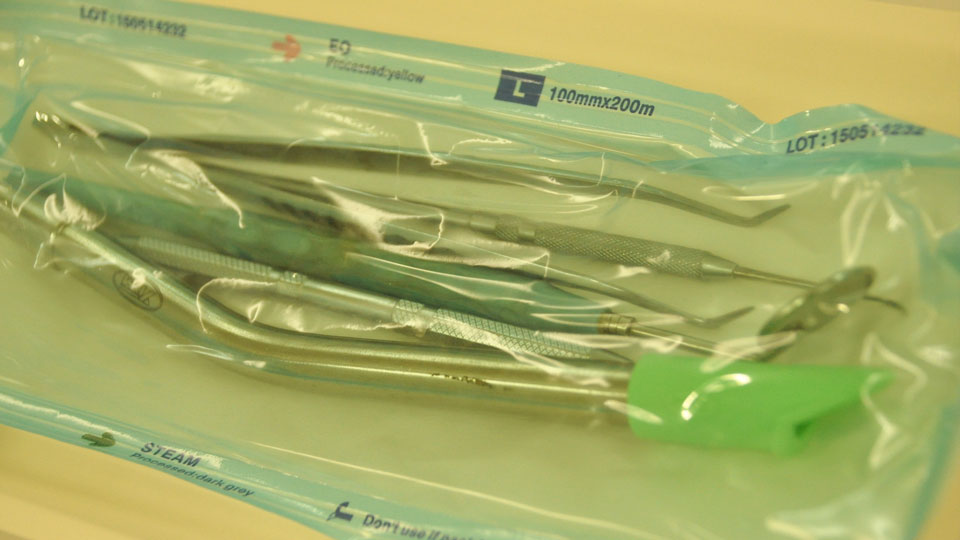
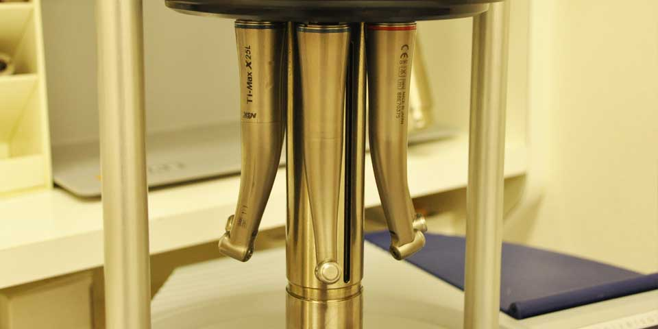
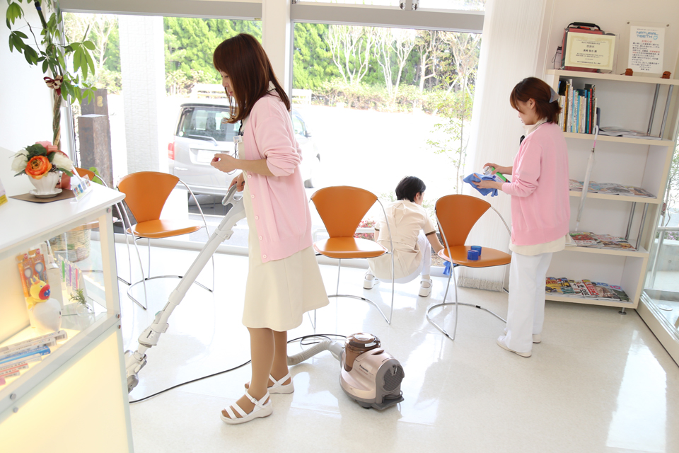

オートクレープ
高圧蒸気滅菌器
血液を介した感染のリスクを軽減し、スタンダードプリコーションの考え方に基づいた感染予防対策に対して高いレベルを実現しています。JIS規格に適合し、厳格とされるヨーロッパ規格（EN13060）にも準拠する患者さんやスタッフへ、より安全な診療環境を提供いたします。（詳しくはこちら）

滅菌と消毒は異なります。消毒が細菌数の減少を目的としている事に対して、
滅菌とは、その名の通り、全ての菌を除去します。
もちろん、治療器具によっては滅菌することで故障するものもあります。その場合は、最大限安全性の証明された消毒法を取り入れております。
通院される小さなお子様から、高齢者の方まで、そしてもちろん毎日働くスタッフも
安心できる衛生環境を実現しています。

血液を介した感染のリスクを軽減し、スタンダードプリコーションの考え方に基づいた感染予防対策に対して高いレベルを実現しています。JIS規格に適合し、厳格とされるヨーロッパ規格（EN13060）にも準拠する患者さんやスタッフへ、より安全な診療環境を提供いたします。（詳しくはこちら）

歯科現場での導入率はまだまだ低いと言われております。熱を加える事ができない器具でも滅菌可能となるので、より多くの治療器具の滅菌実現が可能となりました。

高温オイル消毒器。お口の治療で使用するタービン（キーンと音のする機械）は、お一人お一人変えるようにしております。タービンはとても複雑な構造の為、非常に殺菌しにくかったのですが、本消毒器を使用することで、毎回キレイな状態で治療を行えるようになりました。ストップする時に逆噴射をしますので、消毒しないと前の患者さんの唾液があなたのお口に飛び散る事になります。こわいでしょ（笑）

今まで手洗いでは落としきれなかった汚れを高温洗浄により消毒します。また乾燥まで自動で行いますので安心です。
あなたが患者さんとして、ナチュラルティースにこられた時は以下の流れで安全性を実現しています。

あなたが手が触れるところ、そして呼吸する空気まで大切にしています あなたが一番最初に手にするところである自動ドアのボタンはもちろん、 それ以外のドアノブ、手に触れるところも毎日消毒しています。 消毒に使用しているのは、「アクセル」というウィルス、 細菌の芽胞まで殺せる薬剤を使用して拭いています。 インフルエンザが流行する季節には、抗菌性が高いアロマを使用しています。

使用したユニットは、全て「アクセル」で消毒します。
ですから、前の患者さんの痕が残ることはありません。
もちろん、胸につけるエプロン、コップ、治療器具を置くトレーは使い捨てです。
「基本セット」は滅菌パックに入れて、あなたが来られてから
開けるようにしております。

治療に使用する「タービン」は患者さんごとに滅菌して、
常に安全な状態で使用しています。
また、注射針や薬液などは、お一人お一人使い捨てとなっております。

あなたが手が触れるところ、そして呼吸する空気まで大切にしています あなたが一番最初に手にするところである自動ドアのボタンはもちろん、 それ以外のドアノブ、手に触れるところも毎日消毒しています。 消毒に使用しているのは、「アクセル」というウィルス、 細菌の芽胞まで殺せる薬剤を使用して拭いています。 インフルエンザが流行する季節には、抗菌性が高いアロマを使用しています。